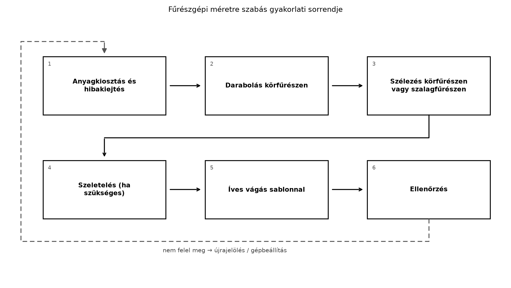

Egy asztalostanuló tömör tölgyből készít konyhai asztal alvázat. A szabásjegyzék megadja a kész alkatrészek méretét: például négy darab láb 720 × 70 × 70 mm, négy hosszléc 520 × 60 × 25 mm. A fűrészüzemből érkezett deszkán azonban repedés és laza göcs látható. Ha a tanuló a hibát nem ejti ki, a kész láb terheléskor eltörhet. Ha viszont túl feszesre vág, nem marad anyag a gyaluláshoz. Ebben az alfejezetben ezért a fűrészgépi méretre szabást tanuljuk meg: darabolást, szélezést, szeletelést, hibakiejtést és íves alkatrészek fűrészelését.
A méretre szabás mindig a rajzból indul, abból készül a szabásjegyzék, majd abból a fűrészelési sorrend. A következő táblázat egy asztal alvázának szabásjegyzék-részlete. A nyers fűrészméretek a kész méretből és a megmunkálási ráhagyásból adódnak.
| Tétel | Megnevezés | Db | Anyag | Kész méret h × sz × v (mm) | Nyers fűrészméret h × sz × v (mm) | Szálirány / élzárás | Megjegyzés |
|---|---|---|---|---|---|---|---|
| 1 | Asztalláb | 4 | tölgy | 720 × 70 × 70 | 740 × 74 × 74 | hosszirányú | hosszon 2 × 10 mm, szelvényen 2 × 2 mm ráhagyás |
| 2 | Hosszléc | 4 | tölgy | 520 × 60 × 25 | 540 × 64 × 29 | hosszirányú | keret oldalléc |
| 3 | Keresztléc | 2 | tölgy | 420 × 60 × 25 | 440 × 64 × 29 | hosszirányú | keret kereszttartó |
A gyakorlati sorrendet az alábbi folyamatábra mutatja. A hibakiejtést már a darabolás előtt elvégezzük, mert így a hibát nem visszük tovább az alkatrészekbe. A szélezés után minden darabot ellenőrzünk, és csak azután haladunk tovább.

A folyamatábra a sorrendet adja, a képsor azt, hogy melyik vágás merre megy a szálirányhoz képest: a hibakiejtés és a darabolás keresztvágás (a szálra merőleges), a szélezés hosszirányú vágás a hullámos kéregél levágásával, a szeletelés pedig a vastagság megosztása élére állított pallóval. A szürke rész hulladék; a méretek a szabásjegyzékből és a kidolgozott példákból valók.
A méreteket a rajz szerint, a ráhagyást pedig a következő művelet szerint adjuk meg. A ráhagyás tájékoztató érték; a pontos méret a gépkönyvtől, a szerszámtól és a faanyagtól függ.
Definíció. Darabolás a fűrészáru hosszirányára merőleges, keresztirányú vágás. Célja a darab hosszának beállítása, ráhagyással. Daraboláskor a hosszméretet a kész méretből és a hosszráhagyásból számoljuk.
Definíció. Szélezés a fűrészáru hosszirányával párhuzamos vágás. Célja a szélesség beállítása, valamint párhuzamos, derékszögű oldalfelületek kialakítása. Szélezéskor az egyik hosszélt választjuk bázisélnek, és ahhoz képest dolgozunk.
Definíció. Szeletelés a fűrészáru vastagsági irányú osztása. Akkor használjuk, ha egy vastag pallóból két vagy több vékonyabb lécet vagy lapot akarunk kialakítani. A szeletelés nagy pontosságot kíván, mert a vágási hézag és a gyalulási ráhagyás együtt határozza meg, mi fér bele a pallóba.
Definíció. Hibakiejtés a fahibát hordozó rész eltávolítása vagy körülvágása. A fűrészgépi anyagkiosztáskor a hibás részt úgy kerüljük ki, hogy az hasznos alkatrészbe ne kerüljön. A fa alaki és szövetszerkezeti hibáit a A fa alaki és szövetszerkezeti hibái alfejezet tárgyalja.
Szabály. A fűrészgépi méretre szabást mindig a hibakiejtéssel kezdjük. Először a repedéseket, laza göcsöket, korhadásokat, kéregbenövéseket távolítjuk el, csak utána osztjuk ki a tiszta anyagot a tiszta alkatrészekre. Így kevesebb hulladék keletkezik, és a hibát nem visszük tovább a gyalulásba.
A darabolást leggyakrabban asztalos körfűrészgépen végezzük. A munkadarab széles lapjával feküdjön az asztalon. A hosszméret beállításához szögütközőt, tolószánt vagy hosszütközőt használunk.
Szabály. Daraboláskor a levágott darabnak szabadon el kell tudnia mozdulni. A párhuzamütközőt és a szögütközőt egyszerre ne használd, mert a levágott darab beszorulhat, és a fűrészlap visszavágódást okozhat. A párhuzamütköző a szélezéshez való.
A darabolás során a vágás legyen derékszögű. A derékszöget a bázisél és a szögütköző pontos beállítása adja. A munkadarabot tolófával vagy tolókocsival vezesd, a kezed soha ne kerüljön a fűrészlap vonalába.
A szélezést asztalos körfűrészgépen vagy szalagfűrészgépen végezzük. A párhuzamütközőt a kész szélesség és a ráhagyás összegére állítjuk be. A munkadarab egyik széle ütközzön a vezetőn, a széles lapja feküdjön az asztalon.
Szabály. Szélezéskor először az egyik hosszélből készíts bázisélt: nyers, görbe élű deszkánál ezt tolóasztalon (szánon) rögzítve vagy egyenes léces sablonnal végezd, párhuzamütközővel csak a második élt vágd, az egyenes élt az ütközőhöz fordítva. A második szélezés ehhez a bázisélihez képest párhuzamosan történjen. Így a munkadarab két hosszélé párhuzamos lesz, és a szélesség egyenletes.
A szélezésnél a bázislap–bázisél elvet követjük: a gépasztal a bázislap, a párhuzamütköző a bázisélnek támasztott vezető. Ez a későbbi gyalulásnál is visszatér.
A szeletelést leggyakrabban szalagfűrészgépen végezzük. A pallót a keskeny oldalára állítva, hosszirányban toljuk a szalag mellett. A szalagfűrész keskeny vágási hézagja miatt kevesebb anyag vész kárba, mint körfűrészlappal. A pallót a gépasztalra merőleges, magas párhuzamütközőhöz (vagy szeletelőtámaszhoz) szorítva vezesd; a felső szalagvezetőt a munkadarab fölé, minél közelebb állítsd; a vágás utolsó 150–200 mm-én tolótuskót használj (tájékoztató, ellenőrizendő: gépkönyv).
Szabály. Szeletelés előtt számold ki, hogy a palló vastagságából mennyi hasznos anyag jön ki. A vágási hézagot és a gyalulási ráhagyást mindig add hozzá. Soha ne feltételezd, hogy két kész vastagság egyszerűen „kijön” a pallóból.
A fűrészgépi szeletelés után a darabok nem kész méretűek, csak nyers vastagságúak. A pontos vastagságot a következő gyalulási művelet adja meg az Egyengető gyalugép: késtengely, késcsere, beállítás, biztonság és a Vastagsági gyalugép és a teljes keresztmetszeti megmunkálás alfejezetek szerint.
A hibát először megjelöljük. A repedés végétől legalább 10–20 mm-rel kijjebb vágunk, hogy a repedés ne tudjon továbbterjedni. A laza göcsöt körbe kell vágni, mert a göcs kieshet, és lyukat hagy a munkadarabban.
Szabály. A hibakiejtésnél a hibás részt mindig egy hulladékdarabba vágjuk, ne egy félkész alkatrész szélére. Ha a hiba a szál közepén van, a darabolási tervben a hibás szakaszt külön hulladékdarabként választjuk le.
A szalagfűrészgép egyetlen síkban vág, a fűrészszalag síkjában. Ezért elsősorban síkgörbéket, például íves oldallapokat, ívelt lábakat, köríves díszléceket fűrészelünk rajta.
Szabály. A legkisebb belső ívsugarat a Asztalos szalagfűrészgép alfejezet táblázatából olvasd le (tájékoztató, ellenőrizendő: szalaggyártói adatlap). Durva becslésként 6–12 mm-es szalagnál ; ennél szélesebb szalagnál a sugár ennél gyorsabban nő, ezért ott kizárólag a táblázat érvényes.
Példa. A táblázat szerint a 10 mm széles szalaggal legalább 35 mm belső sugarú ív vágható, a 25 mm széles szalag legkisebb ívsugara 180 mm. A pontos érték a szalag fogazásától és a gép beállításától függ, ezért mindig ellenőrizd a szalag gyártói adatlapját.
Ha a forma térgörbe, tehát nem egyetlen síkban fekvő vonal, akkor a szalagfűrész közvetlenül nem tudja kivágni. Ilyenkor a térgörbét vetületekre bontjuk, és a vetületeket külön-külön jelöljük. Sorozatgyártásban a térgörbét CNC-megmunkálással vagy sablonos marással állítják elő. A tanulóműhelyben a térgörbét ezért inkább tervezéssel, sablonos eljárással vagy kézi megmunkálással kerüljük ki.
Az íves alkatrészhez mindig sablont készítünk. A sablon lehet papír-, farostlemez- vagy vékony rétegelt lemez. A sablont a munkadarabra helyezzük, és ceruzával körberajzoljuk. A fűrészelésnél a rajzvonalat meghagyjuk, mert a pontos méretet később csiszolással vagy marással érjük el.
A képsor három lépése: a sablon körberajzolása (a szálirányra figyelve, hogy az ív ne fusson rövid szálra), a kivágás szalagfűrészen a rajzvonal külső oldalán 1–2 mm ráhagyással – szűk ívnél előbb felmentő vágásokkal –, végül a simítás csiszolással vagy sablonmarással pontosan a vonalig.
Szabály. A szalagfűrészen a munkadarabot folyamatosan, kis előtolással vezessük. A kanyarban ne erőltessük a szalagot. Ha a szalag csikorog, rángat, vagy a vágás nem követi a vonalat, az a szalag túl széles voltára vagy tompultságára utal.
Gyakori kiegészítő berendezések:
Továbbvitt eredmény. A fűrészgépről lekerülő, hibamentes, ráhagyással ellátott nyers darabokat a Egyengető gyalugép: késtengely, késcsere, beállítás, biztonság és a Vastagsági gyalugép és a teljes keresztmetszeti megmunkálás alfejezetekben gyaluljuk méretre. A szabásjegyzék szerinti anyagkiosztást a Szabásjegyzék és anyagnorma alfejezetben számoljuk részletesen.
Gépbiztonság. A faipari gépet csak betanított, felügyelt tanuló kezelhet; védőberendezés nélkül, egyedül, fáradtan soha ne dolgozz. A művelet előtt olvasd el a gépkönyvet, és ellenőrizd a gépet.
Asztalos körfűrészgépnél:
Szalagfűrészgépnél:
Tilos. Forgó szerszámhoz kesztyűben nyúlni. Tilos védőburkolat vagy hasítóék nélkül vágni. Tilos a daraboláshoz párhuzamütközőt és szögütközőt egyszerre használni. Tilos túl rövid vagy túl keskeny darabot kézzel, tolófa nélkül a lap közelébe vezetni.
A keményfa-por, például a tölgy- és bükkpor, rákkeltő hatású. A porképző gépi műveletnél mindig kapcsold be az elszívást, és viselj FFP-légzésvédőt; a pontos osztályt és határértéket ellenőrizd a hatályos előírás szerint.
Ellenőrzőlista. A fűrészgépi méretre szabás előtt járj végig az alábbi lépéseken.
Példa – darabolás. Egy tiszta tölgyfa szál hossza 2500 mm. A szabásjegyzék szerint asztallábakat készítünk. A kész lábhossz 720 mm, a hosszráhagyás 10 mm mindkét végén, így a nyers hossz 740 mm. A fűrész vágási hézaga 3 mm. Hány darab nyers lábat vágunk egy szálból?
Megoldás.
A szükséges hosszúságot a következő képlet adja:
A képlet vágással számol: akkor helyes, ha az utolsó darab a szál vége, és a gyári bütü (repedés, szennyeződés) nem kerül bele. Ha hulladék is marad, vágás kell.
ahol:
esetén:
Ez kisebb, mint 2500 mm, tehát 3 darab levágása lehetséges.
esetén:
Ez nagyobb, mint 2500 mm, tehát 4 darab már nem fér el.
Válasz. Egy 2500 mm-es szálból 3 darab 740 mm-es nyers asztalláb vágható, és a maradék leválasztásával (3 vágás) marad. A maradékot a szabásjegyzék szerinti rövidebb alkatrészre használhatjuk fel.
Példa – szeletelés. Egy 50 mm vastag bükk pallóból két darab 18 mm kész vastagságú lécet szeretnénk. A gyalulási ráhagyás oldalanként 2 mm, a fűrészhézag 2,5 mm. Elvégezhető-e a szeletelés?
Megoldás.
A nyers vastagság:
ahol:
Behelyettesítve:
A pallóból szükséges összvastagság:
ahol:
Behelyettesítve:
Ez kisebb, mint 50 mm, tehát a szeletelés elvégezhető.
Megjegyzés. Ha a kész vastagság 22 mm lenne, akkor a nyers vastagság 26 mm lenne, és a szükséges pallóvastagság:
Ezt az 50 mm-es palló nem tartalmazza, tehát a vastagabb lécet már nem lehetne így kivenni. A fűrészelés előtti számítás ezért elengedhetetlen.
Technológiai lap. Tölgyfa asztalláb és keretléc nyers méretre szabása fűrészgépekkel.
Termék/alkatrész: asztal alváz lábak, hosszlécek,
kereszttartók.
Anyag: tölgy fűrészáru, például 50–74 mm vastag,
szárított, hibakiértékelt anyag.
Gépek és szerszámok: asztalos körfűrészgép,
szalagfűrészgép, mérőszalag, derékszögelő, tolómérő, jelölőceruza,
sablon.
Beállítási adatok: körfűrészlap például 250 mm
átmérőjű, a gépen jelölt fordulatszám szerint; szalagfűrészhez például
10 mm széles szalag íves vágáshoz. A pontos értékek a gépkönyvből és a
szerszámgyártói adatlapból ellenőrizendők.
Egyéni védőeszközök: munkaruha, védőszemüveg,
hallásvédelem, FFP-légzésvédő, elszívás bekapcsolva.
Gépbiztonság. A művelet betanított, felügyelt tanulónak szól; védőberendezés nélkül, egyedül, fáradtan ne végezd. Indítás előtt ellenőrizd:
Lépések.
A fűrészgépi méretre szabásnál az alábbi ellenőrzéseket végezzük. Az értékek tájékoztató műhelyértékek; a vizsgamunka és a gyártás előtt ellenőrizd az előírt tűréseket.
| Ellenőrzés | Eszköz | Tájékoztató követelmény |
|---|---|---|
| Nyers hossz | mérőszalag, tolómérő | a szabásjegyzék szerinti méret ±1 mm |
| Nyers szélesség | tolómérő | a szabásjegyzék szerinti méret ±0,5 mm |
| Nyers vastagság | tolómérő | a szabásjegyzék szerinti méret ±0,5 mm |
| Derékszög | derékszögelő | fényrés legfeljebb kb. 0,3 mm/100 mm |
| Párhuzamosság | tolómérő | a két él szélességkülönbsége legfeljebb kb. 0,5 mm |
| Hibamentesség | szemrevételezés | nincs repedés, laza göcs, korhadás, idegen anyag |
| Íves vonal | sablon | sablon és munkadarab közti eltérés legfeljebb kb. 0,5 mm; a vonal meghagyva |
| Fűrészfelület | szemrevételezés, ujjbecsapás | ne legyen mély szakadt rost, égett, vonaltól való nagy eltérés |
Ha a méret túl kicsi, a darab selejt, mert a gyalulási ráhagyás már nem áll rendelkezésre. Ha a méret túl nagy, a darab még javítható, de a gyalulás időigénye nő. Az eltérés okát mindig keressük meg a gépbeállításban vagy az anyagkiosztásban.
Hiba. A kész lécben repedés vagy laza göcs
látható.
Ok. A hibakiejtés elmaradt, vagy a hibát a szélezésnél
belevágták a hasznos szakaszba.
Helyes gyakorlat. A hibát már a darabolás előtt,
hulladékdarabként kell leválasztani, és ezt az anyagkiosztásban jelölni
kell.
Hiba. A szélezett darab széle nem párhuzamos, a
szélesség az egyik végén kisebb.
Ok. A báziséli nem támaszkodott pontosan a
párhuzamütközőn, vagy a munkadarab elmozdult vágás közben.
Helyes gyakorlat. Először készítsünk egyenes bázisélt,
majd a második szélezésnél a báziséli szorosan ütközzön a vezetőn.
Hiba. A vágás égett, barna, kormos felületű.
Ok. Tompa fűrészlap vagy fűrészszalag, túl lassú
előtolás, rossz fogterpesztés.
Helyes gyakorlat. A szerszámot ellenőrizzük, a tompa
szerszámot éleztetjük vagy cseréljük, az előtolást egyenletesen
tartjuk.
Hiba. Az íves alkatrész nem követi a sablont, a
belső ívnél a vágás túlfut.
Ok. A fűrészszalag túl széles a kis sugárhoz, vagy a
kezelő erőlteti a kanyart.
Helyes gyakorlat. A görbületi sugárhoz válasszunk
megfelelő szalagszélességet, és a rajzvonalat hagyjuk meg.
Hiba. A körfűrész visszavágja a darabot.
Ok. A levágott darab beszorult a párhuzamütköző és a
fűrészlap közé, mert a darabolásnál párhuzamütközőt is használtak.
Helyes gyakorlat. Daraboláshoz szögütközőt vagy
tolószánt használjunk, párhuzamütközőt ne.
Hiba. Az íves oldallap a sablonra nem illeszkedik. A belső ív csúcsánál körülbelül 5 mm hézag látható, a külső ív pedig túlfut a rajzvonalon.
Vizsgálat. A gép elszívója megfelelően dolgozott, a szalag nem csúszott. A sablon a munkadarabon nem mozdult el. A tanuló azonban 25 mm széles szalagot használt, miközben a sablon belső ívsugara csak 40 mm.
Valódi ok. A 25 mm széles szalag legkisebb ívsugara a 22.1 táblázata szerint 180 mm. A 40 mm sugarú ívben a szalag nem tudott tisztán fordulni, ezért a vágás túlfutott, és a sablonhoz képest eltérés keletkezett.
Javítás. A munkadarabot újra kell jelölni, majd a belső ívet 10 mm széles szalaggal kell kivágni. A külső ívet a rajzvonalon kívül kell vezetni, hogy a pontos méret a későbbi csiszolásnál vagy marásnál alakuljon ki.
Megelőzés. A szalag kiválasztása előtt mindig számoljuk ki a becsült minimális sugarat. A gyártói adatlap alapján ellenőrizzük, hogy a szalag a tervezett ívhez alkalmas-e.
Egy asztalos tanuló bükk fogaslécet készített. A deszka egyik végén hajszálrepedés futott. A tanuló a repedést nem vágta le, mert a szabásjegyzék szerint a léc hossza éppen kiadta a deszka teljes hosszát. A repedést a fűrészszélen meghagyta, és a fogaslécbe becsiszolta. A felületkezelés után a repedés továbbterjedt, és a fogasléc a falra szerelés után elrepedt.
A hiba oka a hibakiejtés elmaradása volt. A tanulság: a fűrészgépi méretre szabás előtt mindig meg kell vizsgálni, hogy a rendelkezésre álló anyagból a hibák eltávolítása után is kijönnek-e az alkatrészek. Ha nem, akkor hosszabb anyagot kell választani, nem pedig a hibát a kész darabba beleszorítani.
1. kérdés. Igaz vagy hamis? A darabolás hosszirányú
vágás.
2. kérdés. Igaz vagy hamis? A szélezéshez
párhuzamütközőt használunk.
3. kérdés. Melyik a szalagfűrész minimális belső
ívsugarának tájékoztató becslése?
4. kérdés. Hány darab 740 mm nyers hosszúságú darab fér
el egy 2500 mm-es szálból, ha a fűrészhézag 3 mm?
5. kérdés. Mi a veszélye annak, ha a tanuló a
daraboláshoz párhuzamütközőt és szögütközőt is használ?
1. feladat (A)
Magyarázd meg a darabolás, szélezés és szeletelés közötti
különbséget!
2. feladat (A)
Sorold fel, miért fontos a hibakiejtés a darabolás előtt! Adj legalább
három indokot.
3. feladat (B)
Egy 3000 mm hosszú, tiszta tölgyfa szálból 4 darab 740 mm nyers
hosszúságú lábat akarsz vágni. A fűrészhézag 3 mm. Elvégezhető-e a
darabolás? Számítással igazold!
4. feladat (B)
Egy 52 mm vastag bükk pallóból 2 darab 22 mm kész vastagságú lécet
szeretnél. A gyalulási ráhagyás oldalanként 2 mm, a fűrészhézag 2,5 mm.
Elvégezhető-e a szeletelés? Számítással igazold!
5. feladat (C)
Egy íves oldallap belső ívsugara 45 mm. A műhelyben 10 mm, 16 mm és 25
mm széles fűrészszalag van. A tájékoztató táblázat (22.1) a mérvadó.
Melyik szalagot választanád? Indokold a választást!
6. feladat (D)
Egy 2000 mm hosszú, 130 mm széles deszka bal végén 150 mm hosszú repedés
található. A feladat 4 darab 450 mm kész hosszúságú léc nyersre szabása.
A hosszráhagyás darabonként 10–10 mm, a fűrészhézag 3 mm. A repedt részt
természetesen ki kell ejteni. Elég-e az anyag? Számítsd ki, és írd le a
vágási sorrendet!
1. Hamis. A darabolás a fűrészáru hosszirányára
merőleges, keresztirányú vágás, a hossz beállítására.
2. Igaz. A szélezésnél a párhuzamütköző állítja be a
szélességet, és vezeti a munkadarabot.
3. A legkisebb ívsugarat a 22.1 táblázatából olvassuk
le; 6–12 mm-es szalagnál durva becslés
.
4.
esetén
;
esetén
.
Tehát 3 darab fér el.
5. A levágott darab beszorulhat a fűrészlap és a
párhuzamütköző közé, és visszavágódást okozhat. Darabolásnál szögütközőt
vagy tolószánt használjunk.
A darabolás keresztirányú vágás, a hosszméret beállítása. A szélezés hosszirányú vágás, a szélesség és az oldalfelületek párhuzamosságának kialakítása. A szeletelés vastagsági irányú osztás, amely során vastagabb pallóból vékonyabb lapokat vagy léceket fűrészelünk.
A hibakiejtés azért fontos a darabolás előtt, mert:
Adott: , , .
A rendelkezésre álló szál hossza 3000 mm, ezért a darabolás elvégezhető. A maradék 31 mm.
A nyers vastagság:
A pallóból szükséges összvastagság:
Ez nagyobb, mint 52 mm, tehát a szeletelés nem végezhető el. Vékonyabb lécet vagy vastagabb pallót kell választani.
A 22.1 táblázata szerint a 10 mm széles szalag legkisebb ívsugara 35
mm ≤ 45 mm, tehát alkalmas.
A 16 mm széles szalag a 15 mm-es (70 mm) és a 20 mm-es (120 mm) érték
között van, ívsugara kb. 75 mm > 45 mm, tehát nem alkalmas.
A 25 mm széles szalag legkisebb ívsugara 180 mm, ezért sem alkalmas.
A választás: 10 mm széles szalag. A pontos minimális sugarat mindig a szalag gyártói adatlapja adja meg.
A repedt rész kiejtése után a hasznos hossz:
A nyers hossz darabonként:
Négy darabhoz szükséges hossz:
Mivel , az anyag nem elég. A hiány 52 mm. (A hasznos hossz a repedés végétől 10 mm-rel kijjebb vágott biztonsági levágást és a 3 mm-es fűrészhézagot is tartalmazza.) Hosszabb deszkát kell választani, vagy csökkenteni a hosszráhagyást, ha a következő művelet azt megengedi.
Vágási sorrend:
A fűrészgépi méretre szabás a rajz–anyag–művelet hármas gyakorlata. A szabásjegyzékből indulunk, majd a fűrészárut daraboljuk, szélezzük, és ha szükséges, vastagság szerint szeleteljük. A darabolás keresztirányú vágás, a szélezés hosszirányú vágás, a szeletelés pedig a vastagsági osztás. A hibakiejtés mindig a darabolás előtt történik, mert a repedés, laza göcs vagy korhadás a kész alkatrészben súlyos hibát és törést okoz. A vágási számításokhoz figyelembe kell venni a hossz- és szelvényráhagyást, valamint a fűrészhézagot. A szalagfűrészgép síkgörbéket vág, a minimális belső ívsugár tájékoztató becslése . A fűrészgépről lekerülő, hibamentes, ráhagyással ellátott nyers darabok a gyalulási és alkatrészgyártási műveletek bemenő anyaga. A gépi munka során mindig a védőberendezéssel, elszívással és tolófával ellátott gépet használjuk, és tilos a veszélyes rövidítéseket bevezetni.
Forrástípusok:
Ellenőrizendő pontok: